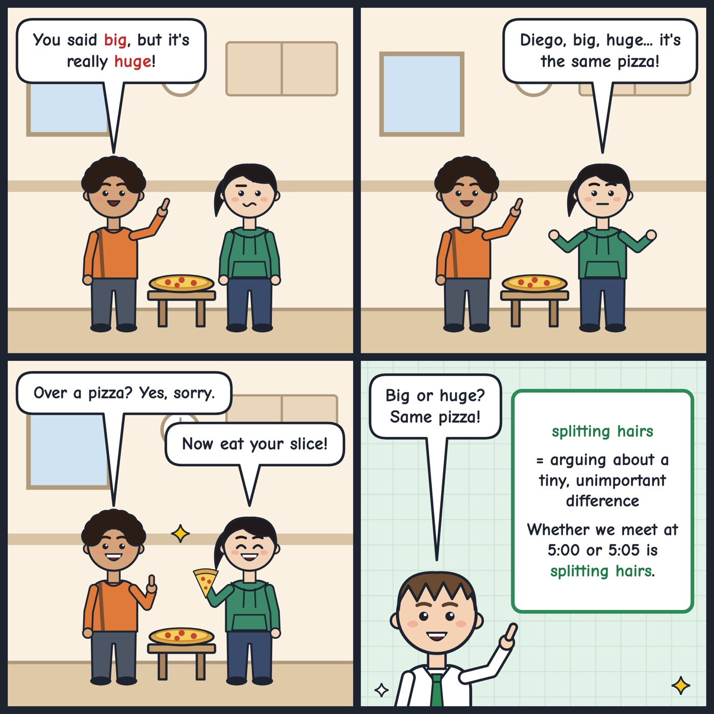

splitting hairs
Arguing about a tiny difference that is not important.
Whether we meet at 5:00 or 5:05 is splitting hairs.
'Split hairs' means to argue about a very small, unimportant difference.

Your turn
When do you split hairs: grammar, food or time?
When do you split hairs: grammar, food or time?